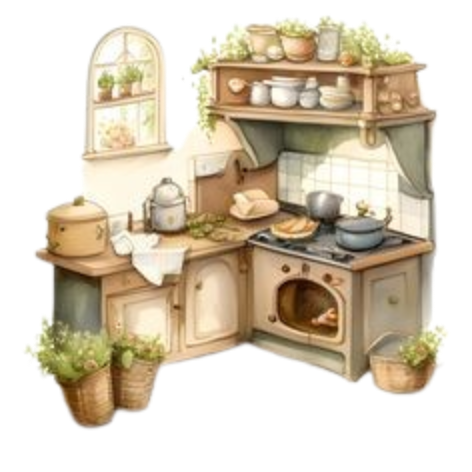

Mini Project:HTML Web Page
“Kiri's Kitchen is a cozy family-owned restaurant nestled in the heart of San Francisco. Established in 2015, it has been serving a fusion of traditional and modern American cuisines, providing a warm, welcoming ambiance that mirrors the comfort found in a family kitchen. The restaurant values fresh, locally sourced ingredients, community engagement, and providing a delightful dining experience that goes beyond just the meal. Kiri believes in creating a place where every diner feels at home while enjoying hearty, delicious meals.”
https://www.pinterest.com/pin/155303887823683313/
https://www.pinterest.com/pin/12384967713445016/
https://www.pinterest.com/pin/1101552390096350445/
Sara L left a 5-star review and said "The atmosphere is so warm and inviting, and the food is absolutely delicious! The grilled salmon is a must-try!"
Mike D left a 4-star review and remarked, "I love the variety in the menu. The seasonal specials keep me coming back. Kiri's Kitchen has become our weekly dining spot."
Emma R left a 5-star review and attested, "The apple pie is the best I've ever had. It's the perfect blend of sweet and tart, and the crust is just right. A cozy place with friendly staff!"
Phone number: (415) 555 - 1234 / Address: 123 Cozy Lane, San Francisco, CA 94102 / Open Mon-Sun 11:00 AM - 10:00 PM